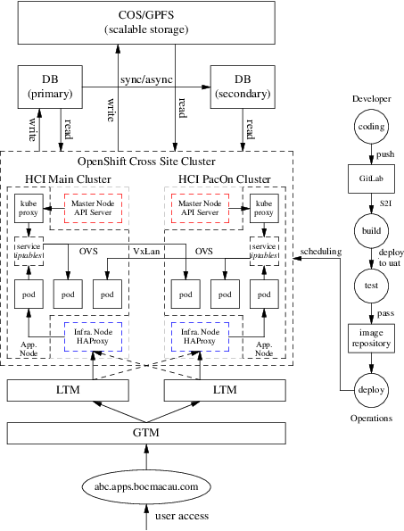
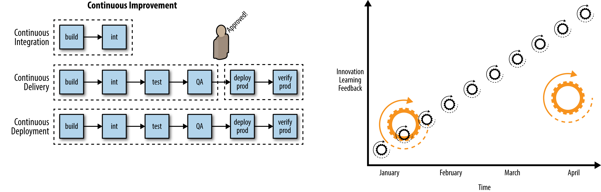
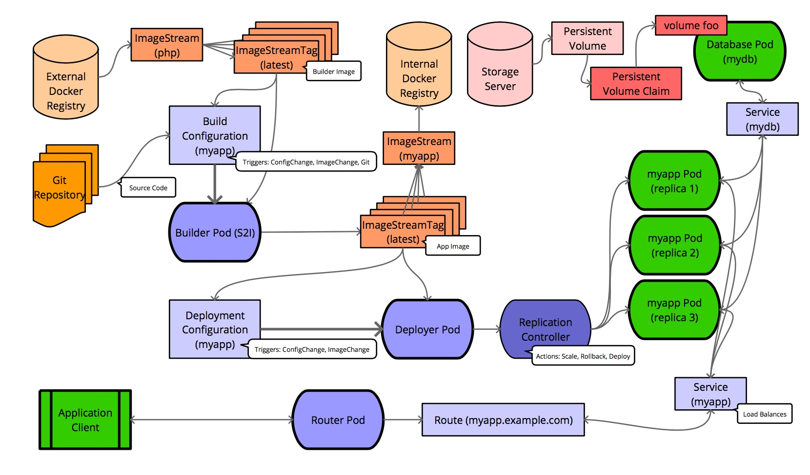
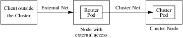
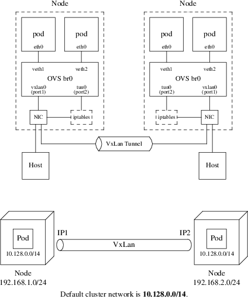
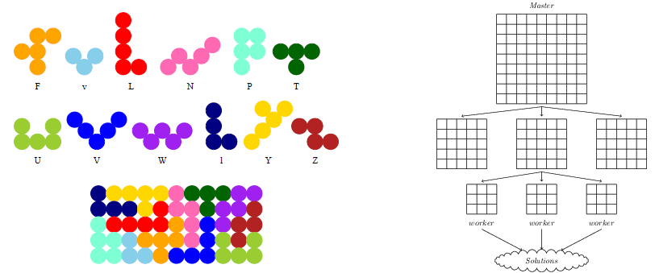
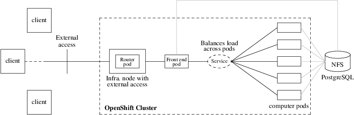
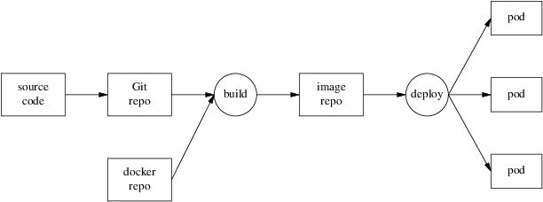
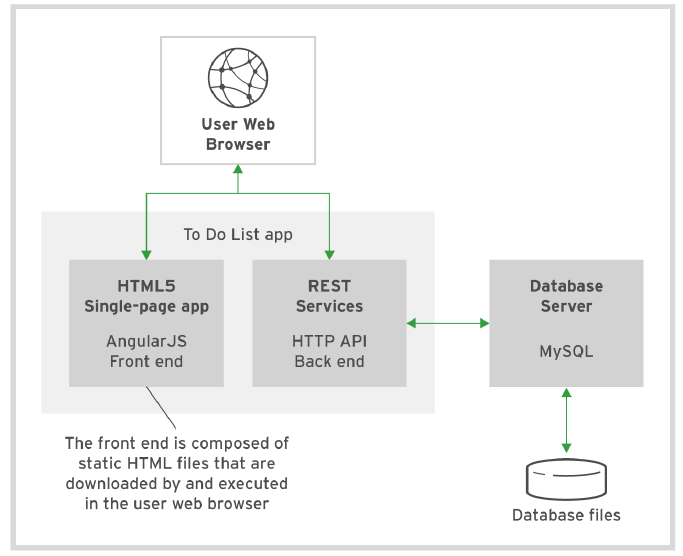

OpenShift Practice
Table of Contents
1 Overview
1.1 Kubernetes & OpenShift
Kubernetes (commonly stylized as k8s, refer to Cybernetics) is an open-source container-orchestration system for automating application deployment, scaling, and management.
- Node
- The server hosting the pod and providing the Kubernetes runtime environment.
- Pods
- A pod is a higher level of abstraction grouping containerized components.
- Replica Sets
- A ReplicaSet’s purpose is to maintain a stable set of replica Pods running at any given time. As such, it is often used to guarantee the availability of a specified number of identical Pods.
- Services
- A Kubernetes service is a set of pods that work together, such as one tier of a multi-tier application. The set of pods that constitute a service are defined by a label selector. Kubernetes provides two modes of service discovery, using environmental variables or using Kubernetes DNS.
- Resource
- Resource is any kind of component definition managed by Kubernetes. The resource contains the configuration of the managed component (for example, the role assigned to the node) and the current state of the component (for example, whether the node is available).
- Controller
- Is a Kubernetes process that monitors resources and makes changes to try to move the current state to the desired state.
- Label
- A key-value pair that can be assigned to any Kubernetes resource. Selector uses the label to choose qualified resources for scheduling and other operations.
- Namespaces
- Kubernetes provides a partitioning of the resources it manages into non-overlapping sets called namespaces. They are intended for use in environments with many users spread across multiple teams, or projects, or even separating environments like development, test, and production.
- Volumes
- Filesystems in the Kubernetes container provide ephemeral storage, by default. A Kubernetes Volume provides persistent storage that exists for the lifetime of the pod itself (retain or recycle. This storage can also be used as shared disk space for containers within the pod.
OpenShift Container Platform is a Kubernetes cluster that is managed by the OpenShift tools (oc command or web console).
- Master node
- The OpenShift Container Platform master is a server that performs control functions for the whole cluster environment. It is responsible for the creation, scheduling, and management of all objects specific to OpenShift. It includes API, controller manager, and scheduler capabilities in one OpenShift binary. It is also a common practice to install an etcd key-value store on OpenShift masters to achieve a low-latency link between etcd and OpenShift masters.
- Infrastructure node
- The OpenShift infrastructure node runs infrastructure-specific services such as the Docker Registry and the HAProxy router. The Docker Registry stores application images in the form of containers. The HAProxy router provides routing functions for OpenShift applications.
- Application node
- The OpenShift application nodes run containerized applications created and deployed by developers. An OpenShift application node contains the OpenShift node components combined into a single binary, which can be used by OpenShift masters to schedule and control containers.
- Console
- Web UI provided by RHOCP cluster.

Figure 1: BOCM OpenShift Cluster
1.2 DevOps
DevOps is concerned with aligning the constituents in the software delivery process to a common goal of value delivery—and it’s not just Developers and Operators, but InfoSec and Quality Assurance functions and more. Recognize that wealth is created when the work product is valued by actors external to the production system. Value delivery outcomes are measured by metrics tied to production delivery velocity, quality, and waste. DevOps emphasizes behavioral- or cultural-related changes such as those which encourage teaming, inclusion, feedback, and experimentation. Technological interventions such as automation are central as they can reinforce such target behaviors. DevOps does not necessarily imply functional roles in software delivery such as development, quality assurance, or operations are merged or seconded. More important is that a professional respect and shared sensibility is formed across the delivery team.
CI/CD generally refers to the combined practices of continuous integration and either continuous delivery.
\[ \boxed{ DevOps = CI/CD } \]

Figure 2: Continuous improvement & Smaller releases, release often, faster feedback

Figure 3: OpenShift Flow
2 Networking
2.1 Overview
- Cluster
- The set of machines in the cluster. i.e. the Masters and the Nodes.
- Master
- A controller of the OpenShift Container Platform cluster. Note that the master may not be a node in the cluster, and thus, may not have IP connectivity to the pods.
- Node
- Group of containers running on a node, managed by OpenShift Container Platform.
- Service
- Abstraction that presents a unified network interface that is backed by one or more pods.
- Router
- A web proxy that can map various URLs and paths into OpenShift Container Platform services to allow external traffic to travel into the cluster.
- Node Address
- The IP address of a node. This is assigned and managed by the owner of the network to which the node is attached. Must be reachable from any node in the cluster (master and client).
- Pod Address
- The IP address of a pod. These are assigned and managed by OpenShift Container Platform. By default they are assigned out of the 10.128.0.0/14 network. Only reachable from the client nodes.
- Service Address
- An IP address that represents the service, and is mapped to a pod address internally. These are assigned and managed by OpenShift Container Platform. By default they are assigned out of the 172.30.0.0/16 network. Only reachable from the client nodes.
The following diagram shows all of the pieces involved with external access:

Figure 4: Traffic Path
2.2 SDN Flows Inside Nodes
OpenShift SDN creates and configures three network devices:
- br0
- the OVS bridge device that pod containers will be attached to. OpenShift SDN also configures a set of non-subnet-specific flow rules on this bridge.
- tun0
- an OVS internal port (port 2 on br0). This gets assigned the cluster subnet gateway address, and is used for external network access. OpenShift SDN configures netfilter and routing rules to enable access from the cluster subnet to the external network via NAT.
- vxlan_sys_4789
- The OVS VXLAN device (port 1 on br0), which provides access to containers on remote nodes. Referred to as vxlan0 in the OVS rules.
For each Pod in the Node, the local OpenShift creates a vethXX interface and assign it to the OVS br0. The vxlan_sys_4789 of br0 is the interface that defines the VXLAN tunnels, or the overlay network, that enables the communication between local Pods with Pods in remote Nodes. This interface is known as vxlan0 interface inside the OVS and that is the name used in the OpenFlow entries. The tun0 interface gets the local cluster network subnet gateway address. This is the interface that provide NAT access from the cluster network subnet to the external network. In additional to the local cluster network subnet gateway address, on each Node the Kubernetes Service objects network is also pointed to the tun0 interface.

Figure 5: OpenShift Network & VxLan
The default OpenShift Router is one or more Router Pods running on
Infrastructure Nodes (infra.myopenshift.com) and is deployed as a Deployment
Config (deploymentconfig.apps.openshift.io/router). Sharing the Network
Namespace enables these Router Pods to receive traffic over the
host-network. By default, the OpenShift Router listens on TCP ports 80
(HTTP), 443 (HTTPS), and 1936 (HAProxy Stats). Once the traffic arrives to the
Pod, it will match the corresponding Route object.
Pod to pod in the same node
eth0 (pod) \(\rightarrow\) vethA \(\rightarrow\) br0 \(\rightarrow\) vethB \(\rightarrow\) eth0 (pod)
Pod to pod in the different nodes
eth0 (pod) \(\rightarrow\) vethA \(\rightarrow\) br0 \(\rightarrow\) vxlan0 \(\rightarrow\) network \(\rightarrow\) vxlan0 \(\rightarrow\) br0 \(\rightarrow\) vethB \(\rightarrow\) eth0 (pod)
Pod to external host
eth0 (pod) \(\rightarrow\) vethA \(\rightarrow\) br0 \(\rightarrow\) tun0 \(\rightarrow\) \(\texttt{SNAT} \atop \texttt{(MASQUERADE)}\) \(\rightarrow\) eth0 (phy.) \(\rightarrow\) Host
3 Move Existing Application to OpenShift
3.1 What is PuzzleBrain?
PuzzleBrain is a distributed system based on DLX algorithm and MapReduce architecture.

Figure 6: Puzzler solution with MapReduce
Build the PuzzleBrain program puzzler
git clone https://github.com/GongCun/Pentomino.git
cd Pentomino
git branch -a
git checkout openshift
make
Test the puzzler
mkdir -p ./test sed -i 's/^M//g' ./run.sh sed -i 's/^M//g' ./root/*.sh # Server (cd ./test; ncat -4kl 3001 -c ../run.sh) # Client (cd ./test; ../puzzler -m -b8 -s 127.0.0.1 -p 3001)
3.2 Migrate the PuzzleBrain to OpenShift

Figure 7: PuzzleBrain in OpenShift
3.2.1 Prepare the docker image
$ docker login registry.redhat.io Username: itd@bocmacau.com Password: Login Succeeded $ view /etc/containers/registries.conf [registries.search] registries = ["hub.docker.com", "registry.redhat.io", "docker.io"] $ docker search --filter is-official=true --limit=3 rhel7 $ docker pull registry.redhat.io/rhel7
3.2.2 The Dockerfile
A Dockerfile is a text document that defines how an image should be created. Depending on the complexity of the application, the Dockerfile can quickly become verbose and unwieldy. As an example, here is the Dockerfile for the official rhel7 container:
FROM rhel7:latest MAINTAINER Cun Gong <gong_cun@bocmacau.com> LABEL description="puzzle container" RUN yum install -y socat && yum clean all ADD root / EXPOSE 3001 CMD ["/puzzle-entry.sh"]
3.2.3 Building & testing the docker images
cp -p ./puzzler ./root && strip -s root/puzzler docker build -t demo-puzzle:v1 .
Test the docker functions
docker run -dit --name=demo-puzzle-test -p 3001:3001 demo-puzzle:v1 # Follow the container logs docker container logs --follow <container> # In the host (cd ./test; ../puzzler -m -b8 -s 127.0.0.1 -p 3001)
Stop & clean the docker images
docker stop <container> # or docker container kill <container> docker rm <container>
3.2.4 Running the docker images on OpenShift
$ oc describe svc/docker-registry -n default Name: docker-registry ... IP: 172.30.151.202 Port: 5000-tcp 5000/TCP $ oc new-project demo $ docker tag demo-puzzle:v1 172.30.151.202:5000/demo/demo-puzzle:v1 $ docker login -p `oc whoami -t` -u system 172.30.151.202:5000 $ docker push 172.30.151.202:5000/demo/demo-puzzle:v1 $ oc new-app demo/demo-puzzle:v1 --name=mypuzzle
Test the pod
$ oc get svc
NAME TYPE CLUSTER-IP EXTERNAL-IP PORT(S) AGE
mypuzzle ClusterIP ${service-ip} <none> 3001/TCP 21s
$ (cd ./test; ../puzzler -m -b8 -s ${service-ip} -p 3001)
Follow the pods log
$ oc get pods $ oc logs -f <pod>
4 Creating Applications with Source-to-Image
The Source-to-Image (S2I) tool implements a mechanism to take application source code and build it into a container image. The tool works by starting a container using an S2I builder image, injecting the application source code into the container, and running an assemble script to set up the contents of the image. The S2I tool is a standalone application you can use on your own local system, independent of any platform for deploying applications to containers. To make it easier to use, OpenShift provides integrated support for the tool, which forms the core of the PaaS functionality of OpenShift.

Figure 8: Source-to-Image process
Detail see source-to-image and example.
4.1 Creating an S2I Builder Image
As an S2I builder is a container image, you can create your own custom builder images. This is done by building an image from a Dockerfile. The Dockerfile for this builder would contain:
FROM docker.io/httpd
LABEL io.k8s.description="Simple HTTP Webserver" \
io.k8s.display-name="Simple HTTP Webserver" \
io.openshift.expose-services="8080:http" \
io.openshift.tags="builder,http" \
io.openshift.s2i.scripts-url="image:///usr/libexec/s2i"
COPY assemble /usr/libexec/s2i/
COPY run /usr/libexec/s2i/
COPY usage /usr/libexec/s2i/
RUN chmod -R 777 /usr/local/apache2/htdocs/ && \
chmod -R 777 /usr/local/apache2/logs/ && \
sed -i 's/Listen 80/Listen 8080/g' /usr/local/apache2/conf/httpd.conf
USER 1001
EXPOSE 8080
CMD ["/usr/libexec/s2i/usage"]
s2i looks for you to supply the following scripts to use with an image:
- assemble - The assemble script should take any source files placed in the /tmp/src directory by the s2i build process and copy them into the required location, or compile them into an executable application.
- run - The run script is executed when the application image produced by the S2I build process is run.
- usage - The usage script included in the image is configured as the default command executed when the image is run.
- save-artifacts (optional) - Captures the artifacts from a previous build into the next incremental build.
Building the Image from the Dockerfile
docker build -t simple-http-server .
Push the source code to GitHub
git add ./index.html
git commit -m"init"
git remote add origin <github-url>
git push -u origin master
To using the Builder Image with OpenShift, upload the image to an external image registry such as quay.io:
docker tag simple-http-server quay.io/gongcun/simple-http-serve docker login -u gongcun quay.io docker push quay.io/gongcun/simple-http-server
Then import it into OpenShift using:
oc import-image quay.io/gongcun/simple-http-server --confirm
This will create an images stream called simple-http-server, and you can use it by running:
oc new-app simple-http-server~https://github.com/GongCun/openshifts2i --name=s2i-test
The expose the service:
oc expose svc/s2i-test --hostname=s2i.apps.myopenshift.com --port=8080
4.2 Trigger new deployment
CI/CD: git commit \(\rightarrow\) git push \(\rightarrow\) oc start-build
Edit the index.html file
<!DOCTYPE html> <html lang="en"> <head> <meta charset="UTF-8"> <title>Haruhi</title> </head> <body> <img src="Haruhi.jpg" alt="Haruhi.jpg"> </body> </html>
Commit the changes and push the code to remote Git repository
$ git add ./index.html ./Haruhi.jpg $ git commit -m"add .jpg" $ git push -u origin master
Start a new Source-to-Image build process and wait for it to build and deploy
$ oc start-build s2i-test $ oc logs -f bc/s2i-test
4.3 Image Streams
OpenShift deploys new versions of user applications into pods quickly. To create a new application, in addition to the application source code, a base image (the S2I builder image) is required. If either of these two components gets updated, OpenShift creates a new container image. Pods created using the older container image are replaced by pods using the new image.
The image stream resource is a configuration that names specific container images associated with image stream tags, an alias for these container images. OpenShift builds applications against an image stream. The OpenShift installer populates several image streams by default during installation. To determine available image streams, use the oc get command, as follows:
$ oc get is -n openshift
Building applications with image stream template
$ oc new-app --name=php-helloworld \ openshift/php~https://github.com/GongCun/DO180-apps#demo \ --context-dir php-helloworld $ oc logs -f bc/php-helloworld $ oc expose --name php-helloworld svc/php-helloworld
5 Creating an Application with a Template
5.1 What Is an Application Template?
A template describes a set of objects that can be parameterized and processed to produce a list of objects for creation by OpenShift. The objects to create can include anything that users have permission to create within a project, for example services, build configurations, and deployment configurations. A template may also define a set of labels to apply to every object defined in the template.
This means that typically a template will include:
- A set of resources that is created as part of “creating/deploying” the template.
- A set of values for the parameters defined in the template.
- A matching label attached to each of the generated resources that provides a convenient way to indicate the resources are connected.
A template will be defined in JSON or YAML format, and will be loaded into OpenShift for user instantiation, also known as application creation.
5.2 Benefits of Using Templates
A template provides developers with an easy way to create all the necessary OpenShift resources for their application to work with minimal effort. This allows you to quickly deploy an application without having to understand all the underlying technology of the OpenShift platform.
5.3 Using To-Do-List Application Template

Figure 9: To-Do-List architecture
The components of To-Do-List
- The presentation layer is built using AngularJS's single-page HTML5 front end
- The business layer is made up of the HTTP API backend using node.js
- The persistence layer is based on MySQL database services
5.4 Parameters
Templates define a set of parameters, which are assigned values. OpenShift resources defined in the template can get their configuration values by referencing named parameters. Parameters in a template can have default values, but they are optional. Any default value can be replaced when processing the template.
$ cd ./Template $ oc process --parameters -f ./todo-template.yaml NAME DESCRIPTION GENERATOR VALUE QUAY_USER Quay namespace the images are stored in
5.5 Creating with a Template
# Login quay.io
$ docker login -u gongcun quay.io
Password:
Login Succeeded
# Creating application
$ oc process -f ./todo-template.yaml \
-p QUAY_USER=gongcun | oc create -f -
# Check the status
$ watch oc get pods
$ oc logs -f <pod>
# Create route
$ oc expose svc/todoapi
Use browser to open http://todoapi-demo.apps.myopenshift.com/todo/.
6 Automatically scaling pods
In OpenShift, a resource request is a threshold you can set that affects scheduling and quality of service. It essentially provides the minimum amount of resources guarantee to the pod. CPU is measured in units called millicores (one-thousandth of a core). By default, pods don't get individual cores; they get time-slices of CPU, sharing the cores on the node with other pods. If a particular node has four CPUs assigned to it, then 4000 millicores are available to all the running pods on that node:
cat /proc/cpuinfo | grep -wc '^processor'
Resource requests also can be combined with a resource limit, which is similar to a request but sets the maximum amount of resources guaranteed to the pod. Setting requests and limits also allows the user to set a quality of service level by default:
- BestEffort
- Neither a resource nor a limit is specified. This is for low-priority applications that can live with very low amounts of CPU and memory.
- Burstable
- Provided when a request is specified that is less than an optionally specified limit.
- Guaranteed
- A request and a limit are both set to the same number. This is for the highest-priority applications that need the most consistent amount of computing power.
Setting a lower quality of service gives the scheduler more flexibility by
allowing it to place more pods in the cluster. Setting a higher quality of
service limits flexibility but gives applications more consistent resources.
Because choosing the quality of service is about finding reasonable defaults,
most applications should fall into the Burstable tier.
Define the resource limits:
oc set resources dc/php-helloworld \ --requests=cpu=100m,memory=128Mi \ --limits=cpu=1000m,memory=1024Mi
Check the resource limits:
$ oc describe dc/php-helloworld
...
Limits:
cpu: 1
memory: 1Gi
Requests:
cpu: 100m
memory: 128Mi
Define the horizontal pod autoscaler (HPA)
oc autoscale dc/php-helloworld --min 1 --max 4 --cpu-percent=20 watch oc get hpa/php-helloworld oc describe hpa/php-helloworld
Do the apache benchmark with ab command
ab -n 1000000 -c 500 \ http://php-helloworld-demo.apps.myopenshift.com/ # -n: the total number of HTTP requests # -c: the number of concurrent requests
Monitor the auto-scaling
watch oc get pods -l app=php-helloworld
Monitor the performance by Prometheus grafana
# oc get route -n openshift-monitoring ... grafana grafana-openshift-monitoring.apps.myopenshift.com
Visit https://grafana-openshift-monitoring.apps.myopenshift.com to monitor the performance.
7 Other
7.1 Create the GitLab
$ docker search --limit=3 gitlab-ce INDEX NAME DESCRIPTION STARS docker.io docker.io/gitlab/gitlab-ce GitLab Community Edition docker image base... 2814 $ docker pull docker.io/gitlab/gitlab-ce # not necessary $ oc new-app --name gitlab gitlab/gitlab-ce $ oc logs -f dc/gitlab
7.2 Debug the problem
Review the application logs to confirm that the failure is caused by insufficient privileges.
$ oc get pods -l app=gitlab NAME READY STATUS RESTARTS AGE gitlab-1-fj8z2 0/1 CrashLoopBackOff 5 10m $ oc logs -f po/gitlab-1-fj8z2 ... Cleaning stale PIDs & sockets find: ‘/run/secrets/etc-pki-entitlement’: Permission denied find: ‘/run/secrets/rhsm’: Permission denied Generating ssh_host_rsa_key... No user exists for uid 1000430000
Create a new service account and add the anyuid security context constraints (SCC) to it.
oc create sa gitlab-sa oc adm policy add-scc-to-user anyuid -z gitlab-sa
Modify the gitlab application so that it uses the newly created service account. Verify that the new deployment is successful.
$ oc get --export dc/gitlab -o yaml >./gitlab.yaml
$ vim ./gitlab.yaml
...
spec:
serviceAccount: gitlab-sa
serviceAccountName: gitlab-sa
containers:
...
$ oc replace -f ./gitlab.yaml
$ watch oc get pods
Expose the gitlab application (HTTP)
$ oc expose svc/gitlab --port 80
Expose the securing application with Edge Routes. Prepare the gitlab-route.yaml file
apiVersion: route.openshift.io/v1
kind: Route
metadata:
annotations:
description: Route for application's http service.
labels:
app: gitlab
name: gitlab
namespace: openshiftdemos
spec:
host: gitlab.openshiftdemos.apps.myopenshift.com
port:
targetPort: 80
to:
kind: Service
name: gitlab
weight: 100
wildcardPolicy: None
tls:
termination: edge
insecureEdgeTerminationPolicy: Redirect
The termination field is edge for edge termination. The insecure policy to redirect requests sent on an insecure scheme HTTP to a secure scheme HTTPS. Run the following command to take effect:
oc replace -f ./gitlab-route.yaml
Fix the pod hostname problem:
$ oc get po/gitlab-2-hcbhw -o yaml >./gitlab-pod.yaml
$ vim ./gitlab-pod.yaml
apiVersion: v1
kind: Pod
metadata:
annotations:
openshift.io/scc: anyuid
labels:
app: gitlab
deployment: gitlab
deploymentconfig: gitlab
name: gitlab.openshiftdemos.apps.myopenshift.com
namespace: openshiftdemos
...
# Delete the old pod
$ oc scale --replicas=0 dc/gitlab
# Re-create the new pod
$ oc create -f ./gitlab-pod.yaml
# Watch the pod status
$ watch oc get pod -l app=gitlab
NAME READY STATUS RESTARTS AGE
gitlab.openshiftdemos.apps.myopenshift.com 1/1 Running 0 6m
Create an application with gitlab:
$ mkdir -p ./demo $ cd ./demo $ cat >./README.md # OpenShift is fun $ git init && git add ./README.md $ git commit -m"init" $ git remote add origin \ http://gitlab.openshiftdemos.apps.myopenshift.com/GongCun/demo.git $ git config http.sslVerify false $ git config --add remote.origin.proxy "" $ git remote show origin $ git push -u origin master Username: Password: